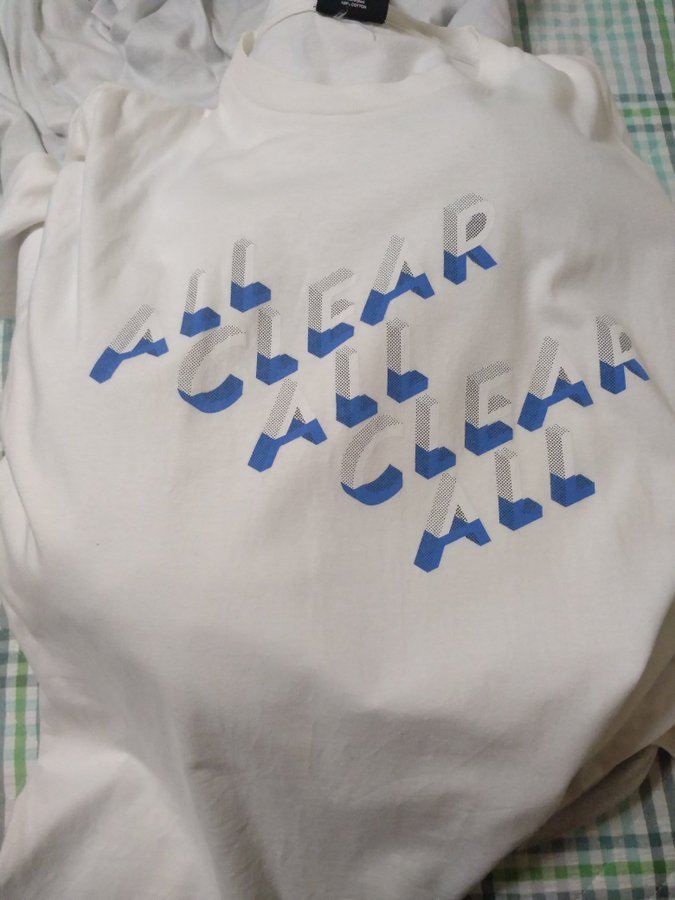
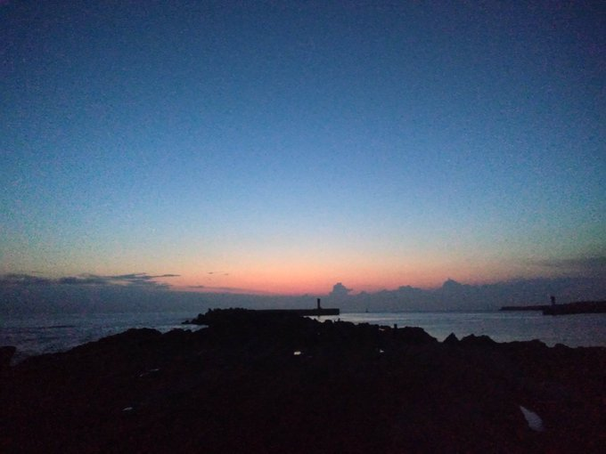
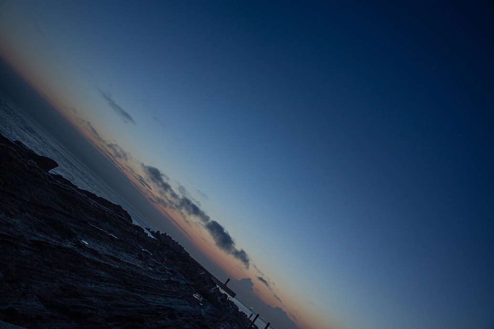
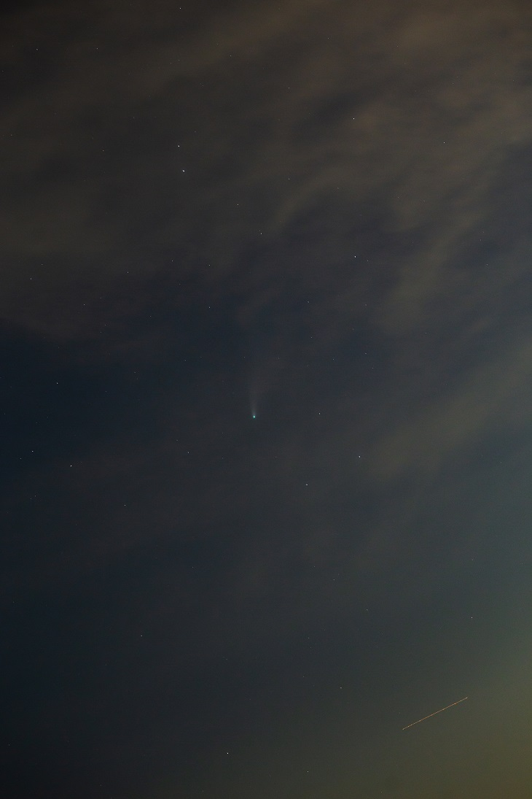
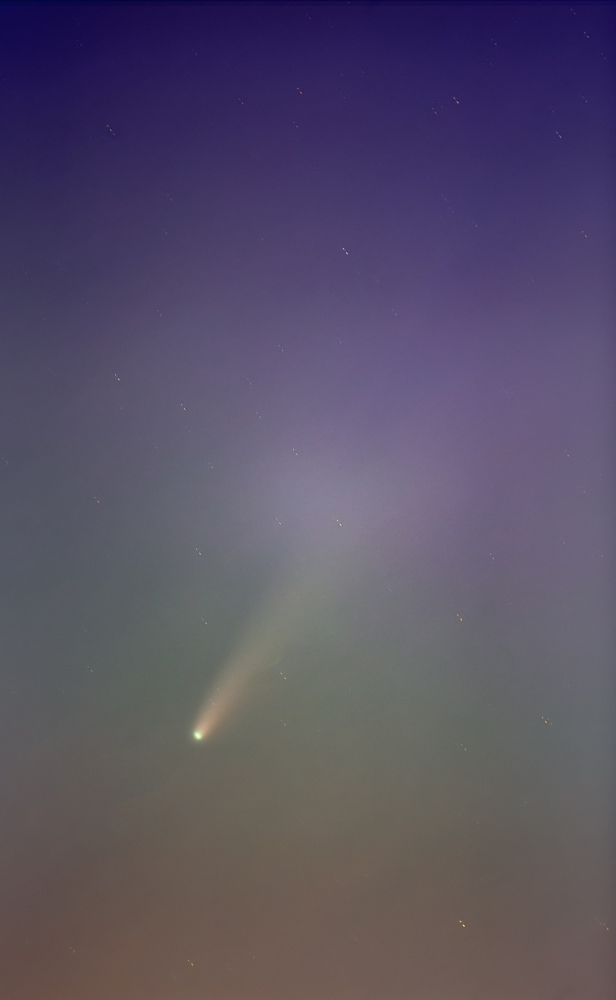

<!DOCTYPE html>
<html>

<head><meta name="generator" content="Hexo 3.8.0">
  <meta charset="utf-8">
  
    <title>
      
        2020年7月 撮ったぜネオワイズ | 
            ほしよみ大学生のブログ
    </title>
    <meta name="viewport" content="width=device-width">
    <meta name="description" content="撮ったぜネオワイズこんにちは．今話題のネオワイズ彗星を撮影してきました．">
<meta name="keywords" content="写真,天体写真,遠征記">
<meta property="og:type" content="article">
<meta property="og:title" content="2020年7月 撮ったぜネオワイズ">
<meta property="og:url" content="http://dabokun.github.io/2020/07/20/00000035-2020-07-neowise/index.html">
<meta property="og:site_name" content="ほしよみ大学生のブログ">
<meta property="og:description" content="撮ったぜネオワイズこんにちは．今話題のネオワイズ彗星を撮影してきました．">
<meta property="og:locale" content="ja">
<meta property="og:image" content="http://dabokun.github.io/2020/07/20/00000035-2020-07-neowise/card.jpg">
<meta property="og:updated_time" content="2021-06-07T14:31:17.869Z">
<meta name="twitter:card" content="summary_large_image">
<meta name="twitter:title" content="2020年7月 撮ったぜネオワイズ">
<meta name="twitter:description" content="撮ったぜネオワイズこんにちは．今話題のネオワイズ彗星を撮影してきました．">
<meta name="twitter:image" content="http://dabokun.github.io/2020/07/20/00000035-2020-07-neowise/card.jpg">
<meta name="twitter:creator" content="@dabo_pic">
      
        <link rel="alternative" href="/atom.xml" title="ほしよみ大学生のブログ" type="application/atom+xml">
        
          
            <link rel="icon" href="/images/favicon.png">
            
              <link rel="stylesheet" href="/css/style.css">
                <!--[if lt IE 9]><script src="//html5shiv.googlecode.com/svn/trunk/html5.js"></script><![endif]-->
                
                  <script data-ad-client="ca-pub-1350688970555904" async src="https://pagead2.googlesyndication.com/pagead/js/adsbygoogle.js"></script>
</head></html>
<body>
  <div id="container">
    <div class="mobile-nav-panel">
	<i class="icon-reorder icon-large"></i>
</div>
<header id="header">
	<h1 class="blog-title">
		<a href="/">ほしよみ大学生のブログ</a>
	</h1>
	<nav class="nav">
		<ul>
			<li><a href="/">Home</a></li><li><a href="/categories">Categories</a></li><li><a href="/tags">Tags</a></li><li><a href="/archives">Archives</a></li><li><a href="/about">About</a></li><li><a href="/work">Work</a></li>
			<li><a id="nav-search-btn" class="nav-icon" title="Search"></a></li>
			<li><a href="https://github.com/dabokun"></a>
			</li>
			<li><a href="https://twitter.com/dabo_pic"></a></li>
			<li><a href="/atom.xml" id="nav-rss-link" class="nav-icon" title="RSS Feed"></a>
			</li>
		</ul>
	</nav>
	<div id="search-form-wrap">
		<form action="//google.com/search" method="get" accept-charset="UTF-8" class="search-form"><input type="search" name="q" class="search-form-input" placeholder="Search"><button type="submit" class="search-form-submit">&#xF002;</button><input type="hidden" name="sitesearch" value="http://dabokun.github.io"></form>
	</div>
</header>
    <div id="main">
      <article id="post-00000035-2020-07-neowise" class="post">
	<footer class="entry-meta-header">
		<span class="meta-elements date">
			<a href="/2020/07/20/00000035-2020-07-neowise/" class="article-date">
  <time datetime="2020-07-20T11:36:09.000Z" itemprop="datePublished">2020-07-20</time>
</a>
		</span>
		<span class="meta-elements author">astr0dab0</span>
		<div class="commentscount">
			
			<a href="http://dabokun.github.io/2020/07/20/00000035-2020-07-neowise/#disqus_thread" class="article-comment-link">Comments</a>
			
		</div>
	</footer>
	
	<header class="entry-header">
		
  
    <h1 class="article-title entry-title" itemprop="name">
      2020年7月 撮ったぜネオワイズ
    </h1>
  

	</header>
	<div class="entry-content">
		
		
		<div id="toc" class="toc-article">
			<p class="toc-title">目次</p>
			<ol class="toc"><li class="toc-item toc-level-1"><a class="toc-link" href="#撮ったぜネオワイズ"><span class="toc-number">1.</span> <span class="toc-text">撮ったぜネオワイズ</span></a></li></ol>
		</div>
		
		<h1 id="撮ったぜネオワイズ"><a href="#撮ったぜネオワイズ" class="headerlink" title="撮ったぜネオワイズ"></a>撮ったぜネオワイズ</h1><p>こんにちは．今話題のネオワイズ彗星を撮影してきました．</p>
<a id="more"></a>
<p>7月19日の日没後，関東圏がもしかしたら晴れるかも？ということで，雨季の最後の望みをかけて，神奈川県城ヶ島まで行ってきました．</p>
<p>（雲が ALL CLEAR されることを願って）</p>
<p>私は神奈川県民なので，都道府県をまたぐ移動にはならない…はず（なんですが結局東京から友人を招いたのであまり意味はありませんでした）．<br>私の自宅最寄り駅で友人を拾って，そのまま城ヶ島の灘ヶ崎へ．到着は18:30頃，すぐ近くの駐車場はいっぱいだったので，付近で機材と友人を下ろして見張りを任せ，少し歩いたところの広い駐車場に車を停めました．</p>
<p></p>
<p>天気はいい感じです！これなら見えそう…．<br>現地には多くの人がいて，今回一緒に来た友人以外にも，<a href="https://twitter.com/KunoichiSky" target="_blank" rel="noopener">くノー</a>さんはじめ二人ほど知り合いに遭遇しました．</p>
<p>初めて見るので，正確な位置は全くわからず．導入の自信はないのでとりあえずカメラに 24mm(-70mm) でしばらく撮影．</p>
<p><br>赤道儀に乗せてガバ水平です．それにしても，きれいな夕焼けだぁ．</p>
<p><span style="font-size: 200%; color: red;">いや，どこにいるか全然わからん…．</span><br>素人には彗星の「す」の字も判別できません．周りからはぽつぽつと，「双眼鏡で見えた」とか，「写った」とか聞こえてきます．探す方法を教えている人もいて，聞き耳をそばだてていましたが，全くわからず．短焦点だとプレビューで分かりづらく，長焦点だとそもそも導入できているのかがわからないというトレードオフがありますね…．</p>
<p>それから2,30分ほどたって，ようやく「これか…？」と思うものを見つけたので，中央に持ってきて 135mm で撮影したところ，しっかり写ってくれました．<br>このときはまだ高い位置にあったうえに，F も明るい光学系だったので，ライブビューで観察することができました．核は他の星と異なり青緑っぽくエメラルドのようにきらきらと輝き，尾もなんとなく判別できました．写真に写ってくれたことよりこっちのほうが感動でした．</p>
<p></p>
<p>写ってくれたので何枚か撮影して満足し，FSQ に付け替えました．明るい空に向けていたせいか淡い部分もあまり見えず，135mm では迫力がなかったので，いっそ 450mm のほうが良いかなと思ったのです．</p>
<p>が，とにかく FSQ だと導入が難しい．友人にも手伝ってもらいましたがなかなか難しく，結局，「振ってたら入った」という形で一応写野に収めることはできました．この頃にもライブビューで観察してみましたが，低い位置にあったため，ライブビューでは FSQ をもってしてもなんとなく見えるかな，という程度になっていました．</p>
<p></p>
<p>淡い部分は諦めていますが，日没後の空のグラデーションもあって，それなりに美しい絵になったんじゃないかと思います．<br>DSS を使ってコンポジットしていますが，なぜか毎回微妙に核が分裂してしまいます．色々試しましたが無理だったので，今回も諦めました（アトラスを撮ってみたときも似たようなことがありました）．一枚ごとに位置合わせをしているはずなのですが…有識者の方はご教示いただけると幸いです．<br>今後暗くなってしまうことが予想されるネオワイズ彗星ですが，暗いところで機会があったらまた狙ってみようと思います．<br>それでは．</p>

		
	</div>
	<footer class="article-footer">
		<a href="https://twitter.com/intent/tweet?text=2020%E5%B9%B47%E6%9C%88%20%E6%92%AE%E3%81%A3%E3%81%9F%E3%81%9C%E3%83%8D%E3%82%AA%E3%83%AF%E3%82%A4%E3%82%BA｜%E3%81%BB%E3%81%97%E3%82%88%E3%81%BF%E5%A4%A7%E5%AD%A6%E7%94%9F%E3%81%AE%E3%83%96%E3%83%AD%E3%82%B0&url=http://dabokun.github.io/2020/07/20/00000035-2020-07-neowise/" class="twitter-share-button" target="_blank" title="Twitter"></a>
		<script async src="https://platform.twitter.com/widgets.js" charset="utf-8"></script>

		<div id="fb-root"></div>
		<script async defer crossorigin="anonymous" src="https://connect.facebook.net/ja_JP/sdk.js#xfbml=1&version=v4.0"></script>
		<div class="fb-share-button" data-href="http://dabokun.github.io/2020/07/20/00000035-2020-07-neowise/" data-layout="button_count" data-size="small"><a target="_blank" href="https://www.facebook.com/sharer/sharer.php?u=https%3A%2F%2Fdabokun.github.io%2F&amp;src=sdkpreparse" class="fb-xfbml-parse-ignore">シェア</a></div>
	</footer>
	<footer class="entry-footer">
		<div class="entry-meta-footer">
			<span class="category">
				
  <div class="article-category">
    <a class="article-category-link" href="/categories/expedition/">遠征記</a>
  </div>

			</span>
			<span class=" tags">
				
  <ul class="article-tag-list"><li class="article-tag-list-item"><a class="article-tag-list-link" href="/tags/photography/">写真</a></li><li class="article-tag-list-item"><a class="article-tag-list-link" href="/tags/astrophotography/">天体写真</a></li><li class="article-tag-list-item"><a class="article-tag-list-link" href="/tags/expedition/">遠征記</a></li></ul>

			</span>
		</div>
	</footer>
	
	
<nav id="article-nav">
  
    <a href="/2020/08/17/00000036-2020-08-amagi/" id="article-nav-newer" class="article-nav-link-wrap">
      <strong class="article-nav-caption">Newer</strong>
      <div class="article-nav-title">
        
          【遠征記】2020年8月 天城
        
      </div>
    </a>
  
  
    <a href="/2020/07/02/00000034-2020-06-summary/" id="article-nav-older" class="article-nav-link-wrap">
      <strong class="article-nav-caption">Older</strong>
      <div class="article-nav-title">
        
          【遠征記】2020年6月 美ヶ原，それと部分日食
        
      </div>
    </a>
  
</nav>

	
</article>


<section id="comments">
	<div id="disqus_thread">
		<noscript>Please enable JavaScript to view the <a href="//disqus.com/?ref_noscript">comments powered by
				Disqus.</a></noscript>
	</div>
</section>

    </div>
    <div class="mb-search">
  <form action="//google.com/search" method="get" accept-charset="utf-8">
    <input type="search" name="q" results="0" placeholder="Search">
    <input type="hidden" name="q" value="site:dabokun.github.io">
  </form>
</div>
<footer id="footer">
	<h1 class="footer-blog-title">
		<a href="/">ほしよみ大学生のブログ</a>
	</h1>
	<span class="copyright">
		&copy; 2021 astr0dab0<br>
		Modify from <a href="http://sanographix.github.io/tumblr/apollo/" target="_blank">Apollo</a> theme, designed by <a href="http://www.sanographix.net/" target="_blank">SANOGRAPHIX.NET</a><br>
		Powered by <a href="http://hexo.io/" target="_blank">Hexo</a>
	</span>
</footer>
    
<script>
  var disqus_shortname = 'astr0dab0';
  
  var disqus_url = 'http://dabokun.github.io/2020/07/20/00000035-2020-07-neowise/';
  
  (function(){
    var dsq = document.createElement('script');
    dsq.type = 'text/javascript';
    dsq.async = true;
    dsq.src = '//go.disqus.com/embed.js';
    (document.getElementsByTagName('head')[0] || document.getElementsByTagName('body')[0]).appendChild(dsq);
  })();
</script>


<script src="//ajax.googleapis.com/ajax/libs/jquery/2.0.3/jquery.min.js"></script>


<link rel="stylesheet" href="/fancybox/jquery.fancybox.css" media="screen" type="text/css">
<script src="/fancybox/jquery.fancybox.pack.js"></script>


<script src="/js/script.js"></script>
  </div>
</body>
</html>